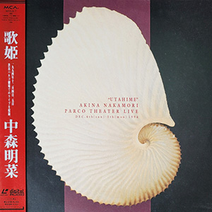

现场视频：第6张
发行年份：1995年
发行日期：3月24日
| 歌名 | 作词 | 作曲 |
|---|---|---|
| 思秋期 | 阿久悠 | 三木たかし |
| 愛染橋 | 松本隆 | 堀内孝雄 |
| ダンスはうまく踊れない | 井上陽水 | 井上陽水 |
| スローモーション | 来生えつこ | 来生たかお |
| 水に挿した花 | 只野菜摘 | 広谷順子 |
| ミ・アモーレ〔Meu amor é･･･〕 | 康珍化 | 松岡直也 |
| 愛撫 | 松本隆 | 小室哲哉 |
| 月華 | 松井五郎 | 梶原秀剛 |
| 黒薔薇 | 松本隆 | Osny Melo |
| 陽炎 | 中森明菜 | 玉置浩二 |
| 私は風 | Maki Annette Lovelace | 春日博文 |
| Rose Bud | 夏野芹子 | 後藤次利 |
| 予感 | 飛鳥涼 | 飛鳥涼 |
首发规格：VHS: MVVD-7，LD: MVLD-7
唱片公司：MCA Victor
再发行：
2000年6月16日 - DVD: MVBH-2
2002年12月4日 - DVD: UMBK-1047
2016年5月4日 - DVD: UPBH-1404~10
2017年3月8日 - DVD: UPBY-9035